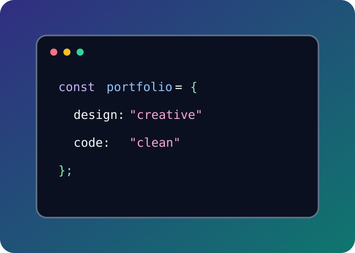
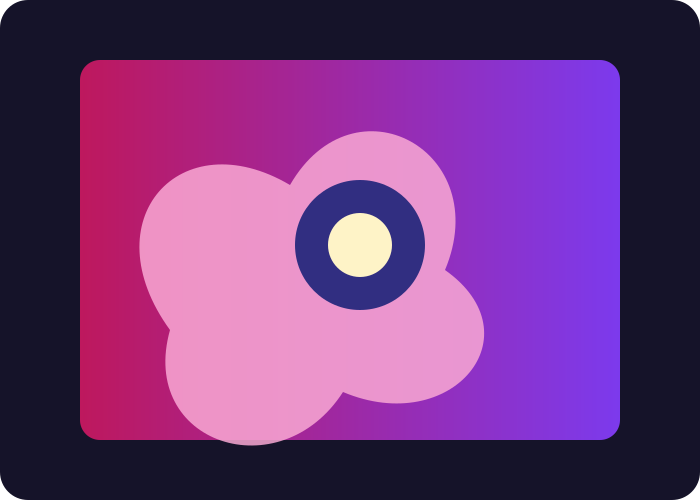

VISUALS / 04
Beni anlatan kareler.
Günlük hayatımdan, üretim alanımdan ve ilgi duyduğum dünyalardan küçük kesitler.

Kişisel portfolyomdan bir portre.

Deneme, hata ve tekrar.
Antalya'dan bir renk paleti.

Görsel anlatımın küçük bir parçası.
Rekabet, takım ruhu ve eğlence.
Galeri görselleri tasarım amaçlı örnek illüstrasyonlardır. Bu alanı kendi fotoğraflarınla (kampüs, çalışma ortamı, hobiler ve günlük yaşam) güncelleyerek kişiselleştirebilirsin.